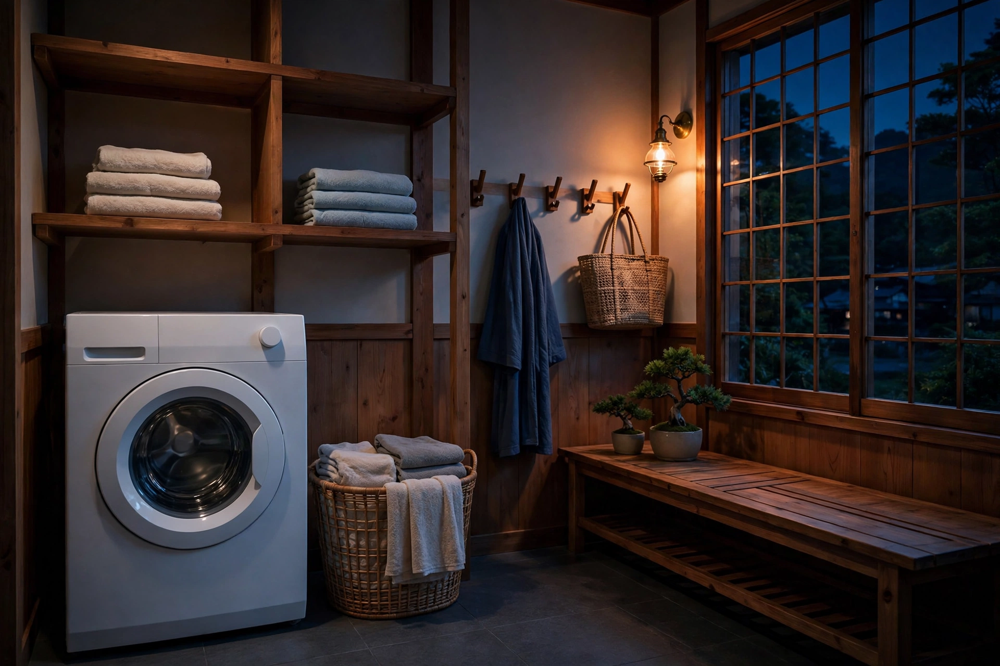

この記事の要点
- 洗濯機や乾燥機の運転音が、壁や床越しに聞こえて気になるときはありませんか？
- 洗濯機の音は、低い振動音と、回転する音、脱水時の大きな音が混ざったものです。
- 洗濯機の音は、機種や運転状態、設置場所によって大きく変わります。
なぜ気になるのか
洗濯機の音は、低い振動音と、回転する音、脱水時の大きな音が混ざったものです。運転の段階によって音が変わるため、気になりやすいと言われます。設置場所や床の構造、機種によって、聞こえ方は大きく変わります。
📊 Hzの目安
洗濯機の音は、機種や運転状態、設置場所によって大きく変わります。あくまで目安として、振動のような低い音が中心になることが多く、回転音や水の音はそれより広い帯域に広がります。単一のHzで決めつけることはできません。気になる音の感じ方に近い、一定の低い音から試してみてください。
🎧 マスキング音の考え方
ずっと続く運転音に対しては、同じようにずっと続く、一定の音を控えめに流す方法が合う場合があります。音量を上げすぎないこと、近い帯域の音を選ぶことがコツです。機械の音そのものを消すものではありません。脱水時のような急に大きくなる音は、紛れさせることが難しい場合があります。洗濯機の音用の8時間動画が公開中です。
💡 時間帯と工夫
洗濯機の音が気になる場合は、運転する時間帯を日中にずらす、防振マットなどの工夫を検討する、といった方法もあります。賃貸住宅での工事や大きな変更は、管理会社への相談をご検討ください。自分の洗濯機の音が隣に気になっていないか心配な場合も、同じ工夫が役立つことがあります。